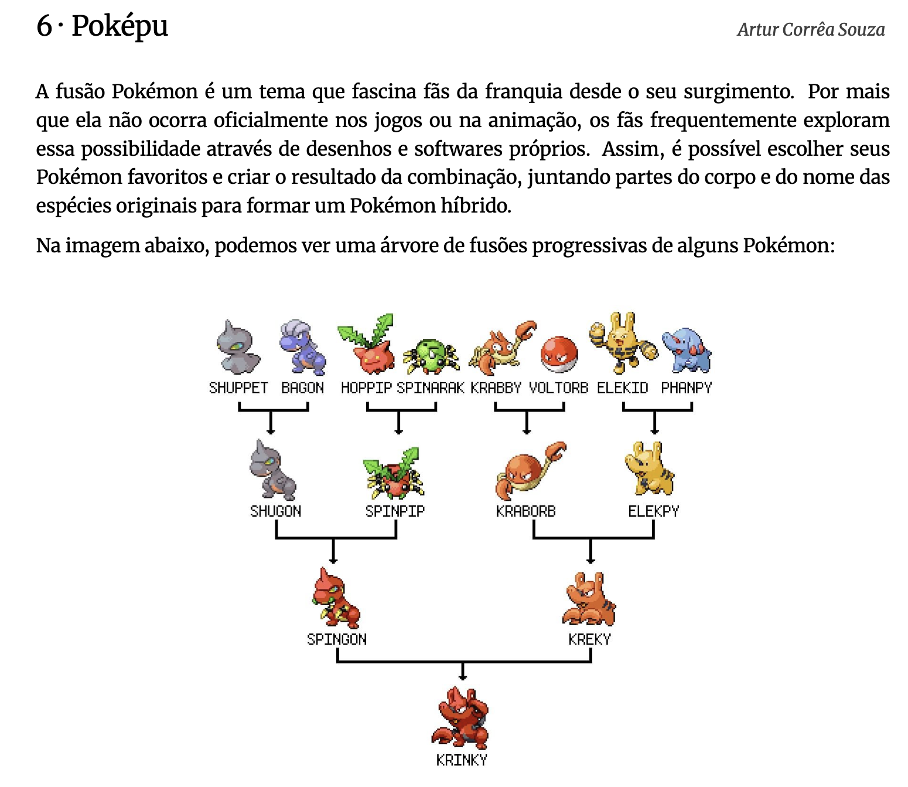

5 O que é ciência?
Roteiro de aula elaborado no RStudio com o auxílio da inteligência artificial ChatGPT e supervisionado pelo professor antes de sua publicação.
5.1 Contextualização
Desde os tempos mais remotos, os seres humanos buscam compreender os fenômenos que os cercam, formulando explicações e crenças a partir da experiência cotidiana. No entanto, muitas dessas interpretações são limitadas por visões parciais da realidade, influenciadas por emoções, tradições ou coincidências. Neste encontro, refletiremos sobre o que distingue a ciência de outros modos de conhecer o mundo e compreenderemos como o pensamento científico, ao se apoiar em métodos rigorosos, ceticismo organizado e revisão constante, oferece uma das formas mais confiáveis de produzir conhecimento e orientar decisões racionais em um mundo marcado pela incerteza.
Ao final deste encontro e com base na leitura indicada, espera-se que você seja capaz de:
- Compreender o que é o pensamento científico e por que ele se diferencia de outros modos de produzir conhecimento sobre a realidade.
Leitura indicada:
Afinal, o que é Ciência? (p. 9-12), capítulo do livro Afinal o que é ciência?… e o que não é, de André Demambre Bacchi. Disponível na Minha Biblioteca.
5.2 Leitura em foco
A palavra “Ciência” tem origem no latim scientia, que significa conhecimento. (Bachi, 2024 - ebook - destaques do autor).
Ciência se refere a um grande empreendimento coletivo da Humanidade, que organiza nossos conhecimentos e predições sobre o Universo. (Bachi, 2024 - ebook - destaques meus).
Esses conhecimentos são obtidos, confrontados e atualizados por meio de um método próprio (…) transparente e apoiado em um ceticismo organizado, que nos ajuda a reduzir as incertezas que temos sobre o mundo que nos cerca. (Bachi, 2024 - ebook - destaques meus).
5.3 Aprendizagem prática
Produção de texto
Como exercitar o ceticismo organizado?
Você já se deparou com vídeos ou manchetes que prometem curas milagrosas ou soluções rápidas para problemas complexos? Nesta atividade, vamos exercitar nossa capacidade de pensar cientificamente.
Responda por escrito à seguinte pergunta: receita apresentada no vídeo a seguir pode ser considerada uma recomendação científica? Justifique sua resposta com base nos critérios que diferenciam o senso comum do pensamento científico. Rascunhe a resposta em papel, à mão, e somente depois transcreva-o no Painel de respostas. No Painel de respostas, selecione a tarefa: Ceticismo organizado.
…
Quais são os elementos não científicos no vídeo?
- Linguagem vaga: expressões como “lá pelos 50 anos”, “tarde demais”, “pele bonita” e “melhorar a saúde” não são mensuráveis.
- Promessas absolutas: afirma que “seus problemas vão acabar” sem qualquer comprovação.
- Apelo à autoridade implícita: o canal se apresenta como confiável, mas não cita fontes nem especialistas.
- Ausência de dados: não há estatísticas, estudos, nem explicações sobre doses ou eficácia real.
- Relações causais forçadas: ingredientes com vitamina C e magnésio são relacionados diretamente à produção de colágeno sem evidência científica.
Quais são as fontes confiáveis citadas?
- O vídeo não menciona estudos, instituições científicas ou profissionais da saúde.
O que seria necessário para testar cientificamente?
- Hipótese clara: “O consumo diário da receita X reduz dor articular em adultos?”
- Experimento controlado: grupos com e sem a receita, de forma aleatória e cega.
- Variáveis controladas: alimentação, idade, saúde prévia, medicamentos.
- Evidências: exames clínicos, questionários validados, análise estatística dos resultados.
5.4 Leitura em foco
[Os] conhecimentos [científicos] são analisados e interpretados de modo contextual à luz do ecossistema científico existente. (Bachi, 2024 - ebook - destaques meus).
Para boa parte de nós, as evidências científicas não são um fator determinante no momento de tomar alguma decisão pessoal. (Bachi, 2024 - ebook - destaques meus).
Coincidências podem acontecer durante o percurso. (…) São coincidências que reforçam uma determinada crença e que, consequentemente, nos afastam da Ciência. (Bachi, 2024 - ebook - destaques meus).
É justamente esse tipo de “miopia” que precisamos evitar. (Bachi, 2024 - ebook - destaques do autor).
É aí que a Ciência entra como um par de óculos que nos ajudam a ver o mundo com mais clareza. Ao nos fornecer uma maneira sistemática e rigorosa de coletar, analisar e interpretar dados e informações, a Ciência nos permite ver além das limitações da nossa percepção pessoal e obter uma compreensão mais precisa da realidade. (Bachi, 2024 - ebook - destaques meus).
O mundo é probabilístico.
Se até agora o senso comum guiou suas escolhas práticas por meio de tentativa e erro, chegou o momento de mergulharmos na ferramenta mais confiável e essencial para a tomada de decisões racionais: o pensamento científico. (Bachi, 2024 - ebook - destaques meus).
5.5 Aprendizagem prática
Desafio
Vamos estimular nosso pensamento científico?
Pensar cientificamente e desenvolver o senso crítico não dependem apenas de acesso a informações, mas sobretudo da capacidade de organizar o pensamento, identificar padrões, levantar hipóteses, interpretar dados e tomar decisões fundamentadas. Isso é um pensamento científico.
As habilidades que envolvem atenção, memória, análise, síntese e inferência são essenciais tanto para resolver problemas do cotidiano quanto para compreender e produzir argumentos bem estruturados.
Para exercitá-las, segue um desafio que exigirá de você concentração, raciocínio lógico e uma boa dose de curiosidade. Em duplas, resolvam a questão abaixo:

Nesta árvore, os nomes dos personagens híbridos são formados a partir de um padrão geral, com exceção de apenas dois. Se os nomes de todos os Pokémon fossem formados seguindo o padrão geral, qual não poderia ser um nome possível para o último Pokémon da árvore (o mais de baixo)?
- krabgon
- elekgon
- spinpy
- spinky
- spinorb
Gabarito
Resposta: (d)
Podemos notar que os nomes dos híbridos são formados pela combinação dos nomes dos dois Pokémon que os originaram. Por exemplo, na primeira linha temos:
• shugon: formado por shu- de shuppet e -gon de bagon.
• spinpip: formado por spin- de spinarak e -pip de hoppip.
• kraborb: formado por krab- de krabby e -orb de voltorb.
• elekpy: formado por elek- de elekid e -py de phanpy.A princípio, podemos pensar que o nome é sempre formado pela primeira parte de um Pokémon com a última parte de outro. No entanto, isso não se aplica a kraborb (a última parte de voltorb deveria ser -torb, e não -orb). Portanto, a regra é mais simples: combinar o início de um nome com o final de outro.
Na segunda linha, temos:
• spingon: formado por spin- de spinpip e -gon de shugon.
• kreky: formado por kr- de kraborb e -ky de elekpy.No caso de spingon, as partes dos nomes são as mesmas usadas anteriormente. Como spinpip é a junção de spin- com -pip, spingon usa spin- de spinarak, mantendo o padrão. Porém, kreky quebra o padrão, pois não usou o final completo de elekpy (faltou o ‘p’) e nem a parte inicial correta de kraborb (deveria ser krab-). Assim, kreky é o primeiro nome fora do padrão.
Depois temos:
• krinky: formado por kr- de kreky e -gon de spingon.Esse nome também foge ao padrão, pois mistura as partes do meio (-in-) de um nome com o início e o fim de outro. Portanto, krinky é o segundo Pokémon fora do padrão.
Agora que identificamos os dois nomes fora do padrão, podemos descobrir como seriam se seguissem a regra. A fusão de kraborb e elekpy deveria usar a parte inicial de um com a parte final do outro, respeitando as partes originais. Então, podemos ter:
• kraborb + elekpy = krabpy ou
• kraborb + elekpy = elekorb.Por fim, o nome do último Pokémon será a fusão de spingon com krabpy ou elekorb, utilizando o mesmo princípio de combinar partes iniciais e finais. As possíveis combinações são:
• spingon + krabpy = spinpy ou krabgon;
• spingon + elekorb = spinorb ou elekgon.Esses quatro nomes aparecem nas alternativas. O único que não seria possível é spinky, pois ele depende de kreky, que já está fora do padrão.
Um ponto interessante é que, ao seguir esse padrão de combinações, as informações sobre os Pokémon originais podem se perder. Por exemplo, o nome krabgon poderia parecer uma fusão de krabby e bagon, mas na verdade é o resultado de várias fusões anteriores.
Por fim, o nome do problema, Poképu, é a junção de Pokémon e Khipu.
Para a próxima aula:
Leia o texto Racionalidade científica: saindo do piloto automático (p. 31-35), capítulo do livro Afinal o que é ciência?… e o que não é, de André Demambre Bacchi. Disponível na Minha Biblioteca.
Leia também Observe, test, reflect: A better life with the scientific method, artigo de Santiago Gisler publicado pela Ivory Embassy. Disponível em: https://ivoryembassy.com/the-scientific-method/.